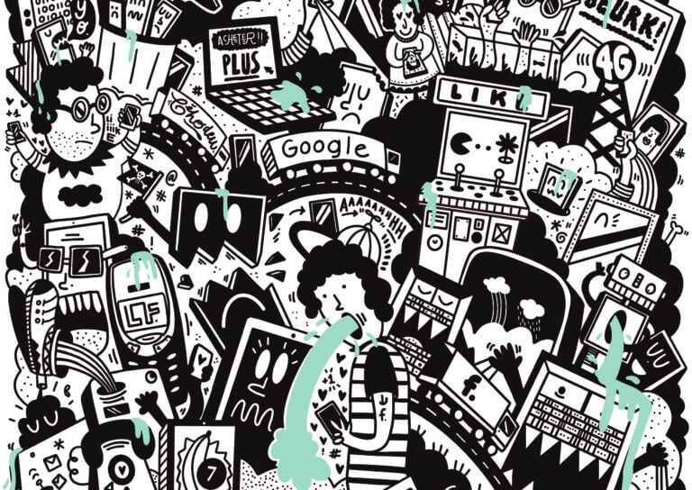

Internet : en l’espace de quelques années ce réseau est devenu indispensable dans nos vies on ne peut ni s’en passer, ni l’ignorer. Tout le monde possède au moins ne serait-ce qu’une adresse mail pour le travail ou divers services en ligne. Mais que savons-nous réellement de l’impact de l’utilisation d’internet ?
Envoyer un mail, stocker des fichiers en lignes, regarder des vidéos en streaming… tout cela paraît particulièrement simple et quelque part ça l’est. En revanche ce qui l’est moins ce sont les infrastructures à la fois matériel et logiciels qui sont mises à en place pour nous simplifier la vie. Vous avez sans doute déjà entendu parler de la notion de datacenter et bien là se situe le cœur de notre problème. Ces complexes gigantesques abritent plusieurs centaines voir milliers de machines et serveurs dans lesquels transites nos données. Lorsque vous envoyé un mail, il n’arrivera pas directement à la personne à qui il est destiné, il passera d’abord par l’un des serveurs d’un datacenter quelques part dans le monde. Tout cela nécessite une énergie colossale pour fonctionner, les données issues d’internet ont un réel impact écologique.
Depuis plusieurs années maintenant nous sommes entrés dans une nouvelle forme de consommation des données. Les sites ne sont plus seulement des pages un peu moches avec lesquelles on ne peut pas interagir, uniquement destiner à nous informer. Non, maintenant le Web est devenu « responsive ». On peut interagir avec la page, regarde du contenu vidéos via les différentes plateformes tel que Netflix, sur des documents collaboratifs en ligne et même joué au dernier Battlefield depuis son navigateur. Imaginer maintenant un peu l’ampleur du problème si pour l’envoie d’un simple mail on produit déjà 4g de CO2…
L’utilisation du cloud pollue beaucoup, chaque année la consommation mondiale de services de streaming produit 300 millions de tonnes de CO2 soit autant que l’Espagne !